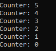
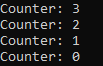

Пространства имен
using System;
namespace Counter
{
class CounterDown
{
int val;
public CounterDown(int n)
{
val = n;
}
public int Counter()
{
if(val > 0) return val--;
else return 0;
}
}
}
Пример использования
int i = 5;
Counter.CounterDown cd = new Counter.CounterDown(i);
do{
i = cd.Counter();
Console.WriteLine("Counter: " + i);
}while(i > 0);
В результате:

Директива using
using Counter;
...
int i = 5;
CounterDown cd = new CounterDown(i);
do{
i = cd.Counter();
Console.WriteLine("Counter: " + i);
}while(i > 0);
Данный способ позволяет указать пространство имен один раз и дальше использовать его методы.
Вторая форма директивы using
using MyCounter = Counter.CounterDown;
...
int i = 3;
MyCounter cd = new MyCounter(i);
do{
i = cd.Counter();
Console.WriteLine("Counter: " + i);
}while(i > 0);
В результате:

Created with the Personal Edition of HelpNDoc: Full-featured Kindle eBooks generator